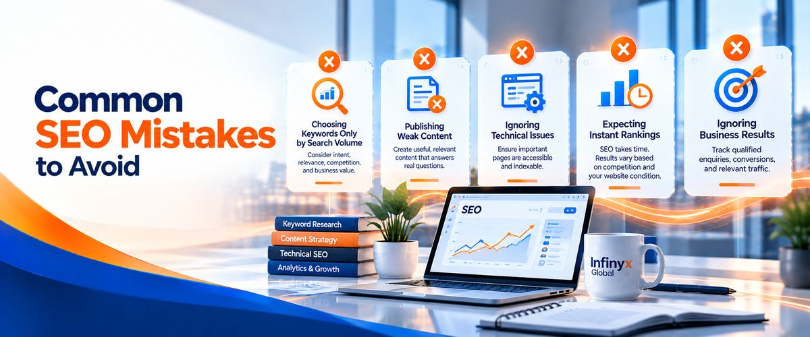

Your website needs a clear SEO strategy to attract people searching for your products or services. Without a structured plan, you may publish articles and update pages without knowing whether those activities are helping your business reach the right audience. A well-planned SEO strategy helps you prioritize improvements, increase relevant search visibility, and attract potential customers.
You can build a practical SEO strategy in 30 days by researching keywords, auditing your website, improving important pages, publishing useful content, and tracking results. Although SEO improvements may take several months to become noticeable, the first 30 days can establish a strong foundation for long-term growth.
Infinyx Global provides SEO services, including B2B SEO, technical SEO, content SEO, on-page SEO, off-page SEO, and SEO audits. These services can support businesses at different stages of their optimization journey. This guide explains how to develop and execute an SEO strategy in 30 days while identifying opportunities to improve your website’s performance.
What Is an SEO Strategy?
An SEO strategy is a structured plan for improving your website’s visibility in relevant search results. It combines keyword research, technical improvements, content optimization, internal linking, and backlink development to help search engines understand your website and connect it with the right audience.
For example, a B2B company may want to attract decision-makers searching for business services, while an online store may focus on improving product-page visibility. Every business needs an approach that reflects its audience and objectives. SEO is a long-term process, so your first month should focus on establishing the right foundations rather than expecting immediate rankings.
Week 1: Research Your Website and Target Audience
The first week focuses on understanding your website’s current condition, identifying your audience, and discovering valuable search opportunities. This research helps you prioritize activities that directly support your business goals.
Day 1: Define Your SEO Goals
Start by deciding what you want SEO to achieve. Your objectives might include increasing qualified organic traffic, generating more enquiries, improving service-page visibility, or attracting customers searching for specific products.
Record your current performance using Google Search Console and Google Analytics, if available. These tools help you establish a baseline and understand which pages and metrics deserve attention.
| SEO goal | What to measure |
|---|---|
| Increase organic visibility | Impressions and average search positions |
| Attract more visitors | Organic clicks and sessions |
| Improve service-page performance | Clicks and engagement on priority pages |
| Generate more enquiries | Form submissions and tracked conversions |
| Improve content effectiveness | Search performance of important articles |
How to execute it: Establish three to five measurable goals and record your starting figures. Identify the pages most important to your business and decide which metrics you will review at the end of the month.
Day 2: Audit Your Website
A website audit helps identify problems that may affect search visibility and user experience. Check for broken links, missing titles, duplicate content, indexing issues, mobile usability problems, and unclear service information.
Google Search Console can help investigate indexing issues, while website crawlers can identify problems across multiple pages. Prioritize issues according to their potential impact instead of trying to fix everything simultaneously.
How to execute it: Create an audit spreadsheet with these columns:
Page URL
Issue identified
Priority level
Recommended action
Completion status
Fix problems affecting important pages first. Infinyx Global’s SEO audit service can help businesses assess technical health, on-page issues, content gaps, and opportunities for improvement.
Days 3 and 4: Research Your Keywords
Keyword research reveals what potential customers search for when looking for information, products, or services. Start by listing your offerings and the problems they solve, then use Google Keyword Planner, Google Search Console, Ahrefs, or Semrush to discover relevant search terms.
Consider search intent, competition, business relevance, and estimated search volume when choosing keywords. A keyword with fewer searches may still be valuable if it attracts people who are actively comparing providers or looking for a specific service.
| Keyword example | Search intent | Suggested content |
|---|---|---|
| What is B2B SEO? | Informational | Educational blog post |
| B2B SEO services | Commercial | B2B SEO service page |
| Technical SEO checklist | Informational | Practical guide |
| SEO agency for businesses | Commercial | Service or landing page |
How to execute it: Build a keyword spreadsheet containing the search term, its intent, estimated search volume where available, and the page that should target it. Group related terms by topic and prioritize those that align with your business goals. Infinyx Global’s B2B SEO service can support businesses targeting commercial searches and decision-makers throughout the B2B buying journey.
Days 5 and 6: Analyze Your Competitors
Competitor analysis helps you understand which topics and page types appear in search results for your priority keywords. Review competing websites to identify their content structure, important pages, common questions, and information gaps.
Avoid copying competitor content. Instead, look for opportunities to provide clearer explanations, practical examples, and genuinely useful information that reflects your own expertise.
How to execute it: Analyze three to five competing websites and record:
Their main topics and important landing pages.
Questions they answer for potential customers.
Content gaps your website could address.
Opportunities to provide more useful examples or explanations.
Use these findings to strengthen your content plan and identify relevant topics your website should cover.
Day 7: Map Keywords to Pages
Keyword mapping assigns each priority keyword or related group of keywords to the most appropriate website page. Your homepage should describe your business, service pages should explain specific offerings, and blog posts should answer informational questions.
This structure helps search engines understand your content and reduces unnecessary overlap between pages targeting similar search intent.
How to execute it: Create a keyword map connecting each priority topic to an existing page or planned article. By the end of week one, you should have a website audit, a keyword list, competitor findings, and a clear list of SEO priorities.
Week 2: Improve On-Page SEO and Technical Performance
The second week focuses on making your website easier for search engines to understand and visitors to navigate. Prioritize improvements that strengthen important pages, resolve technical barriers, and help users find relevant information.
Days 8 and 9: Improve Page Titles and Meta Descriptions
Every important page should have a clear, descriptive title that reflects its main topic. Include your primary keyword naturally without repetitive wording. Meta descriptions should summarize the page accurately and explain why the information may be useful to searchers.
Although Google may generate its own search snippets, relevant descriptions can help users understand what your page offers.
How to execute it:
Review titles and meta descriptions on priority pages.
Identify unclear, duplicated, or irrelevant wording.
Rewrite them to reflect the page’s topic and search intent.
Record the changes and monitor performance over time.
Consider Infinyx Global’s on-page SEO service if you need assistance improving important website pages.
Days 10 and 11: Improve Your Content
Your content should answer relevant questions and help visitors make informed decisions. Use a clear main heading, descriptive subheadings, straightforward explanations, and practical examples. Review existing pages for outdated information, weak sections, unnecessary repetition, and missing details that could help your audience.
Focus on usefulness rather than adding words simply to increase content length. Strong content should explain your offering, solve a problem, or help readers understand their next steps.
How to execute it: Select three important pages and review the following elements:
Heading structure and readability.
Accuracy and completeness of information.
Natural keyword usage and search intent.
Relevant internal links and calls to action.
Clarity of your services and value proposition.
Update weak sections and ensure that each page provides a useful next step.
Day 12: Fix Technical SEO Issues
Technical SEO helps search engines crawl and index your website correctly. Review your robots.txt file, XML sitemap, canonical tags, indexing directives, redirects, and HTTP status codes. You should also check mobile usability and Google’s Core Web Vitals, which measure loading performance, responsiveness, and visual stability.
Prioritize issues according to their impact. An important service page that cannot be indexed generally deserves more immediate attention than a minor technical warning on an unimportant page.
| Technical element | What to check |
|---|---|
| Indexing | Can important pages appear in search results? |
| XML sitemap | Does it include the appropriate canonical URLs? |
| Robots.txt | Are important pages accidentally blocked from crawling? |
| Canonical tags | Are preferred page versions identified correctly? |
| Broken links and redirects | Do important URLs resolve correctly? |
| Core Web Vitals | Are there significant loading, responsiveness, or stability problems? |
How to execute it: Inspect priority URLs in Google Search Console, investigate indexing problems, and resolve significant technical barriers. Infinyx Global’s technical SEO service can help businesses investigate problems affecting crawling, indexing, and website performance.
Day 13: Improve Internal Linking
Internal links connect related pages and help visitors discover additional information. They also give search engines context about your website’s structure and the relationships between different topics.
For example, a blog post about keyword research could link to a related content guide and an appropriate SEO service page.
How to execute it: Review your important service pages and supporting articles, then add relevant internal links using descriptive anchor text. Ensure that important pages are easy to reach and that each link provides a useful next step for readers.
Day 14: Test the User Experience
A website should make it easy for visitors to understand your services and contact your business. Test your website on mobile devices and desktop computers, checking navigation, readability, buttons, forms, and contact information.
How to execute it: Test your five most important pages using this checklist:
Navigation menus work correctly.
Text is readable on mobile devices.
Contact forms and buttons function properly.
Service information is clear.
Contact details are accurate.
Visitors can find relevant next steps easily.
By the end of week two, your priority pages should have stronger content, clearer metadata, and improved technical foundations.
Week 3: Create Content That Attracts Relevant Visitors
The third week focuses on turning keyword research into useful content. Rather than publishing articles without a clear purpose, choose topics that answer customer questions and support your main services.
Days 15 and 16: Create a Content Calendar
A content calendar organizes your publishing activities and helps ensure that every article supports your SEO objectives. Choose topics based on keyword research, competitor analysis, customer questions, and the problems your business solves.
Useful content formats include educational guides, service comparisons, buying advice, and practical industry insights.
How to execute it: Prepare a content calendar with the following information:
| Content detail | Purpose |
|---|---|
| Article title | Defines the topic |
| Target keyword | Establishes the primary search focus |
| Search intent | Identifies what readers want |
| Target audience | Clarifies who the content serves |
| Publishing date | Keeps production organized |
| Internal links | Connects related content and service pages |
Prioritize topics that connect naturally to your main services and provide genuine value to potential customers.
Days 17 and 18: Publish Your First SEO Article
Choose a topic that matches a clear search intent and answers a relevant audience question. Organize the article into logical sections, use keywords naturally, and include examples that help readers apply the information.
Before publishing, verify factual claims, review headings, test internal links, and ensure the page works correctly on mobile and desktop.
How to execute it: Write and review your article, optimize its title and headings, add relevant internal links, and publish it after checking its accuracy and readability. Infinyx Global’s content SEO service can support businesses planning content around relevant search topics and audience needs.
Day 19: Update Existing Content
Existing pages may offer valuable opportunities for improvement, particularly when they receive search impressions but relatively few clicks. Use Google Search Console to identify pages that could benefit from clearer titles, better explanations, updated information, or more relevant internal links.
How to execute it:
Select two existing pages with clear improvement opportunities.
Review their search performance and content quality.
Update outdated information and strengthen weak sections.
Improve internal linking where appropriate.
Record changes so you can review their performance later.
Days 20 and 21: Publish Supporting Content
Supporting articles expand your coverage of related topics and help readers explore connected questions. For example, an SEO strategy guide could link to separate articles about keyword research, technical SEO, and organic traffic measurement.
Each article should provide distinct value rather than repeat information already covered elsewhere.
How to execute it: Publish another useful article or prepare the next one for publication. Connect related content using internal links where they help readers. By the end of week three, you should have a working content calendar and new or improved pages supporting your main SEO goals.
Week 4: Build Authority and Measure Results
The final week focuses on external visibility, local search opportunities where relevant, and performance measurement. Review the work completed so far and identify the improvements that deserve continued attention.
Days 22 and 23: Review Backlink Opportunities
Backlinks are links from other websites to your pages. Relevant backlinks can help people discover your content and may support search visibility. Focus on earning links through useful resources, industry relationships, expert contributions, and relevant publications rather than purchasing links intended to manipulate rankings.
How to execute it:
Review your backlink profile using an appropriate SEO tool.
Investigate relevant competitor backlinks.
Identify industry publications and useful resource pages.
Find opportunities to share genuinely valuable content.
Avoid link schemes designed to manipulate search rankings.
Infinyx Global’s off-page SEO service can support backlink reviews, outreach planning, and relevant link opportunity research.
Days 24 and 25: Improve Local SEO Where Relevant
If your business serves local customers, review your Google Business Profile and ensure that your business information is accurate. Check your business name, address, phone number, opening hours, and service details. Genuine customer reviews can also help potential customers understand your business and evaluate your services.
How to execute it: Verify your business information, correct inconsistencies, and review your local search presence. Businesses serving multiple countries may instead need market-specific keyword research and content suited to each target audience.
Days 26 and 27: Measure Your SEO Performance
Return to the goals you established on day one and compare your current performance with your starting baseline. Google Search Console provides data on clicks, impressions, click-through rates, and average search positions, while Google Analytics can help measure organic landing-page performance and conversions when tracking is configured correctly.
Remember that 30 days may be too short to evaluate the full impact of SEO changes. Use early performance data to identify useful signals and prioritize future improvements rather than expecting immediate ranking gains.
| Metric | What it helps you understand |
|---|---|
| Organic clicks | How many search-result clicks your website receives |
| Impressions | How often your pages appear in search results |
| Click-through rate | The percentage of impressions resulting in clicks |
| Average search position | The average position reported for your search results |
| Organic conversions | Whether organic visitors complete tracked business goals |
How to execute it: Prepare a monthly report covering completed tasks, changes in search performance, important landing pages, available conversion data, unresolved problems, and recommended next steps. Use this information to guide your next month of optimization.
Days 28 and 29: Fix the Biggest Remaining Issues
Review your original website audit and performance report to identify the most important unresolved problems. Focus on issues that affect valuable pages, prevent indexing, weaken user experience, or create barriers to enquiries.
How to execute it: Select three priority tasks, complete the required improvements, and verify that the fixes work as intended. Document outstanding issues that need additional technical support.
Day 30: Plan the Next 60 Days
Your first month should establish a clearer understanding of your website’s SEO needs, priority keywords, technical problems, and content opportunities. The next step is to create a realistic roadmap covering content development, page improvements, technical monitoring, and performance reviews.
How to execute it: Create a 60-day plan listing each activity, deadline, responsible person, and intended outcome. Schedule regular performance reviews and adjust your priorities when new data reveals better opportunities.
How Infinyx Global Can Support Your SEO Strategy
Building an SEO strategy requires research, technical knowledge, content planning, and consistent execution. Some businesses can manage these activities internally, while others may benefit from specialist support to identify technical issues, improve service pages, or develop content around customer searches.
Infinyx Global offers SEO services covering several important areas of search optimization.
| Service | How it supports your SEO strategy |
|---|---|
| SEO audits | Identify website issues and establish improvement priorities. |
| B2B SEO | Connect buyer searches with relevant service pages and supporting content. |
| On-page SEO | Improve page titles, headings, content relevance, and internal links. |
| Technical SEO | Review crawling, indexing, and technical barriers to search visibility. |
| Content SEO | Plan useful content around relevant search topics and customer needs. |
| Off-page SEO | Evaluate backlinks and identify relevant external link opportunities. |
The best starting point depends on your website and business objectives. A new website may need keyword research and a technical review, while an established business may benefit from content improvements or stronger internal linking. Identify your biggest SEO problems first, then decide which activities you can manage internally and where professional assistance may be useful.
Visit Infinyx Global to explore its SEO services and discuss your business requirements.
Common SEO Mistakes to Avoid

Avoiding common mistakes helps you focus on activities that support long-term search visibility and business growth.
Choosing keywords based only on search volume: Consider search intent, relevance, competition, and business value instead of prioritizing popular terms alone.
Publishing weak content: Every article should answer a genuine question, provide useful information, or help readers make a decision.
Ignoring technical issues: Important pages must be accessible to search engines and eligible for indexing to appear in relevant search results.
Expecting instant rankings: SEO performance varies depending on competition, website condition, and the work completed. Allow time to evaluate meaningful results.
Ignoring business results: Track qualified enquiries, conversions, and relevant organic traffic to understand whether SEO supports your business objectives.
Conclusion
Building an SEO strategy from scratch in 30 days helps you establish the foundations for stronger organic search visibility. Start with research, audit your website, identify valuable keywords, improve important pages, and publish content that addresses your audience’s needs. Finish the month by measuring performance, resolving priority issues, and preparing a plan for continued improvement.
SEO requires consistent work, regular measurement, and adjustments based on evidence. Infinyx Global can help businesses explore SEO services suited to their needs, including audits, B2B SEO, technical optimization, content planning, and off-page SEO.
Visit infinyxglobal.com to explore the available services and discuss your SEO goals. With a clear plan and consistent execution, your business can build a stronger foundation for long-term organic search growth.